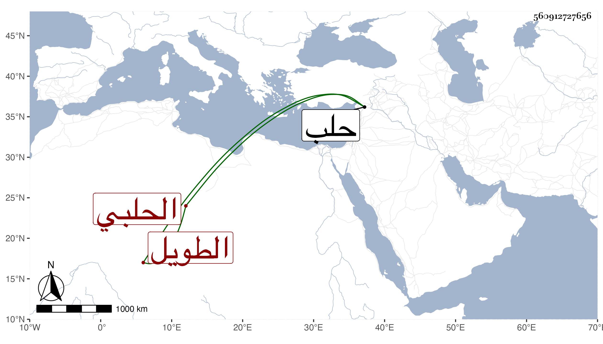

0902Sakhawi.DawLamic.ITO20230111-ara1.EIS1600.560912727656
Biography ID: 560912727656
483
محمد بن علي بن عبد الرحمن بن عبد الغفور بن عبد الكريم الحلبي الطويل ويعرف بابن آمين الدولة . ولد في صفر سنة ست وستين وسبعمائة وأجاز له في سنة ثمانين فما بعدها الصلاح بن أبي عمر وعبد الوهاب القروي والتقى البغدادي والمحب الصامت والباجي وأبو الهول الجزري وأبو اليمن بن الكويك والحراوي في آخرين . وحدث سمع منه الفضلاء أجاز له في سنة إحدى وخمسين ومات بعد ذلك بيسير ، وكان معالجا مصارعا جيد الرمي بالسهام من بيت معروف بحلب ذكر جده ابن خطيب الناصرية في تاريخها ولقبه بالشيخ فخر الدين وأنه حدث عن سنقر .
